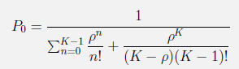
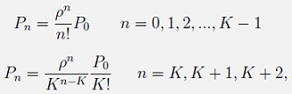
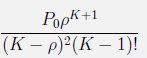

µ = servis hızı = µ =
λ = trafik hızı = λ =
p = trafik yoğunluğu = λ/µ =
N = sistemin Servis kanalı sayısı = N =
Po = sistemin bos kalması olasılıgı =  = 1/
(
+
)
=
Pn = sistemde n birim olması olasılıgı=  =
Pr = sistemde en az k birim olması olasılıgı= (k*Pk)/(k-p) =
(
*
)
/
(
-
)
=
Lq = kuyrukta olması beklenen birim sayısı =  =
Lservis = serviste olması beklenen birim sayısı = L = P1 = p/(1+p) =
L = sistemde olması beklenen birim sayısı = L = Lq+Lservis = p/(1+p) =
Wq = kuyrukta geçen beklenen süre(dakika olarak)= 0 =
Wservis = serviste geçen beklenen süre(dakika olarak)= Lservis/λeff = 1/µ =
W = sistemde geçen beklenen süre(dakika olarak)= Wq+Wservis=